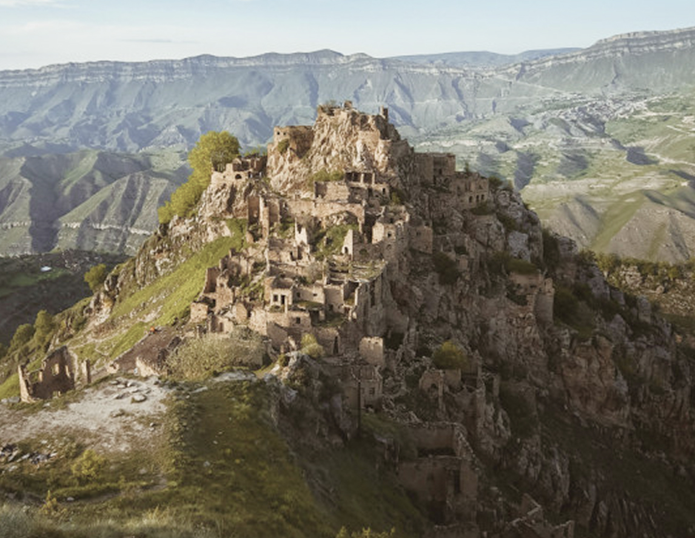

Мы пройдём небольшой участок маршрута Кавказской тропы по весеннему цветущему Дагестану.
Это настоящий горный поход, где мы будем идти с рюкзаками, питаться едой, которую принесем и спать в палатках. Длина пешего маршрута составит около 85 км. Общий набор высоты более 4,5 тысячи метров.
Нитка маршрута будет проходить по населенным пунктам и у нас будет возможность пополнить запасы чистой воды, продуктов, а также остановиться на ночлег в гостевом доме, чтобы отдохнуть, помыться и познакомиться с местной культурой. Во время переходов между населенными пунктами мы будем наслаждаться горной природой.
Сложность маршрута средняя, но для неготовых к такой нагрузке он может показаться сложным. Для такой активности нужна предварительная физическая подготовка.